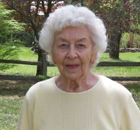

Född
1959-05-18
i Lowell, Massachusetts, USA
Född
1959-05-18
i Lowell, Massachusetts, USA
|
Född
1933-04-08
i Belmont, Massachusetts, USA
1
.
|
 |
|
Greta Marie Magnuson
Född 1933-04-08 i Belmont, Massachusetts, USA 1 . |
F
John Magnusson.
Född 1893-08-13 i Nyhem, Trästen, Vislanda (G) 2 . Död 3 december 1978 i Arlington Heights, Massachusetts, USA 3 . |
FF
August Magnusson.
Född 1864-06-13 i Sörängen Snörshult, Vislanda (G) 4 . Död 1957-02-14 i Haga, Lindås Östregård, Vislanda (G) Kyrkväktare Hemmansägare 1894 Järnvägsarbetare Halmstad Bolmen Järnväg 1888-04-17 5 . |
FFF Magnus Carlsson. Född 1824-12-13 i Kråketorpet, Aringsås (G) 4 . Död 1888-01-27 i Nyhem, Trästen, Vislanda (G) 6 . |
|
FFM Anna Petersdotter. Född 1829-11-11 i Sjötorp, Vislanda, Kronoberg, Sverige 7 8 . Död 1906-08-27 i Skeppshult, Vislanda, Kronoberg, Sverige 7 . |
|||
|
FM
Anna Johannidotter.
Född 1867-05-29 i Lundbyholm, Lindås Västregård, Vislanda (G) 4 . Död Lungsot 1913-04-20 i Hagalund, Skeppshult, Vislanda (G) |
FMF Johannes Larsson. Född 1822-09-10 i Moen, Vislanda (G) 4 . Död 1907-06-09 i Lundbyholm, Lindås Västregård, Vislanda (G) 7 . Kyrkväktare mellan 1864 och 1907 i Vislanda (G) 9 . |
||
|
FMM Kathrina Petersdotter. Född 1824-12-13 i Lindås Östregård, Vislanda, Kronoberg, Sverige Död 1911-02-08 i Lundbyholm, Lindås Västregård, Vislanda (G) |
|||
|
M
*Anna Martina Magnuson.
Född 18 september 1896 i Elnaryd, Vislanda, Kronoberg, Sverige 1 10 11 . Död 29 maj 1981 i Arlington Heights, Massachusetts, USA |
MF
Samuel Kommunalnämndsordförande Johannesson.
Född 24 december 1856 i Elnaryd, Vislanda, Kronoberg, Sverige Död 26 mars 1929 i Elnaryd, Vislanda, Kronoberg, Sverige |
||
|
MM
Ingrid Svensdotter.
Född 18 januari 1862 i Värmanshult, Vislanda, Kronoberg Död 17 april 1917 i Elnaryd, Vislanda, Kronoberg, Sverige |
|||
|
Relation med
Frederic B Biederman.
Död 1994-03-01 12 . |
Framställd 2026-09-21 med hjälp av Disgen version 2025.